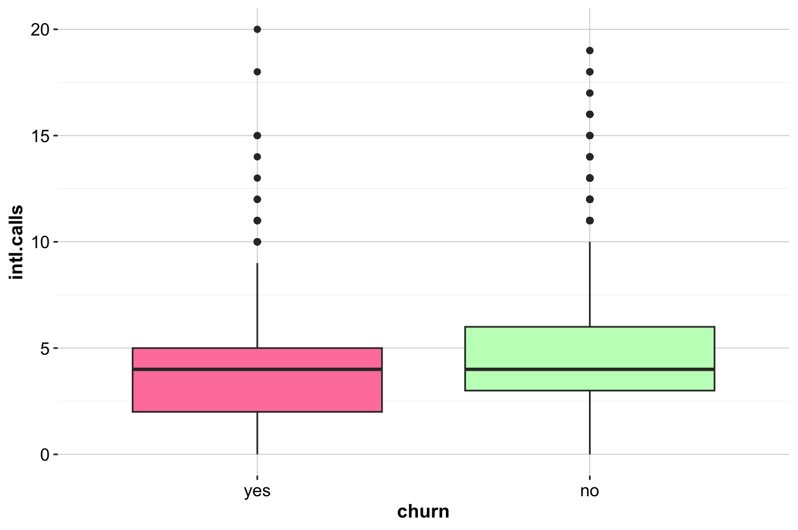
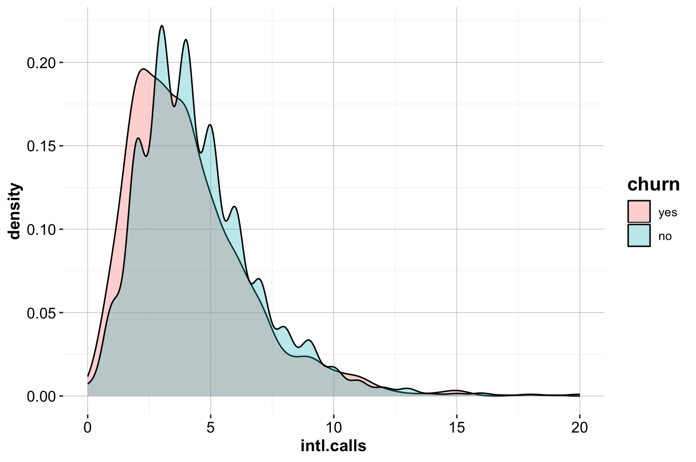
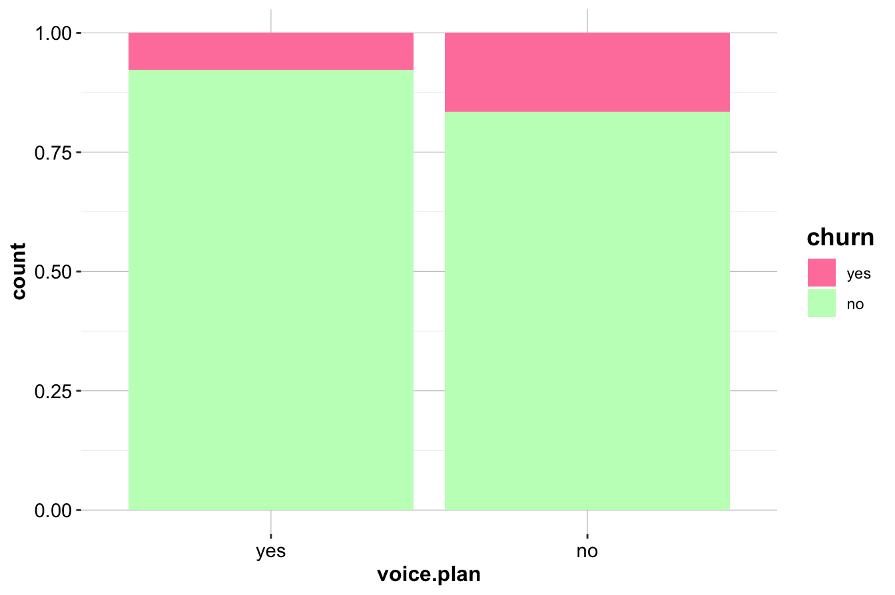
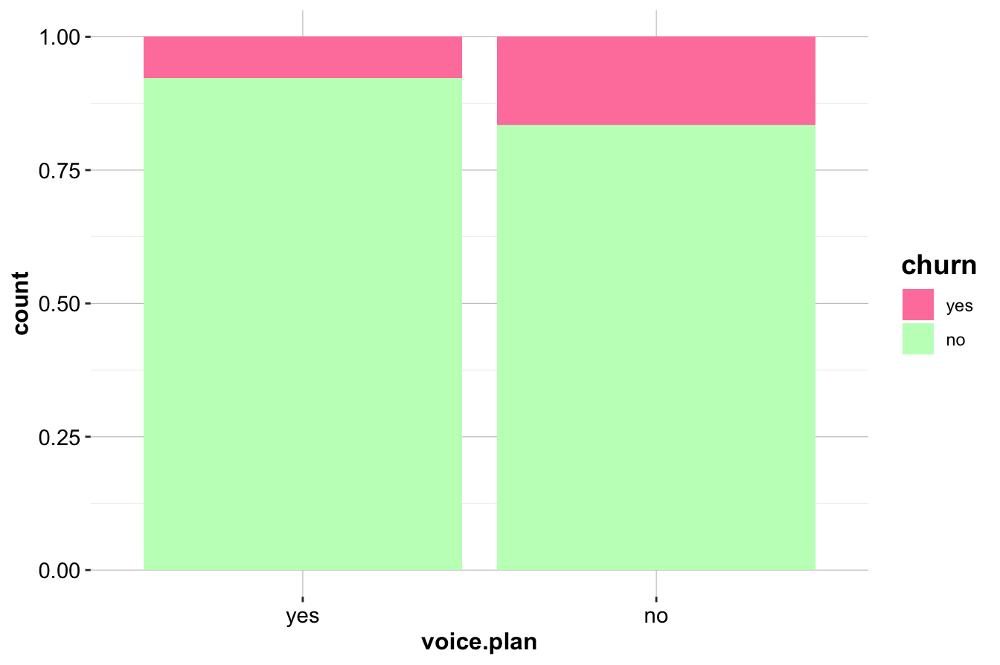
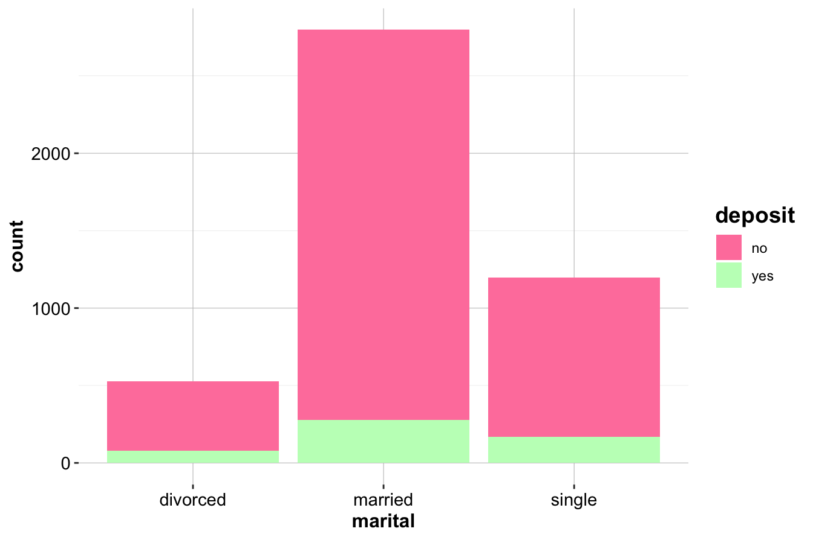
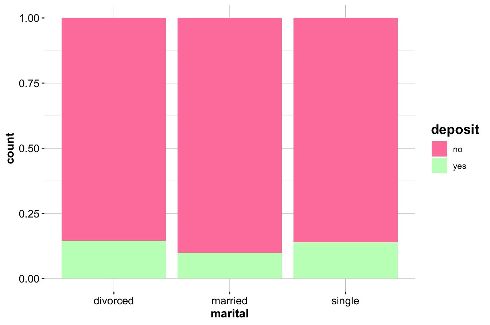

5 Statistical Inference and Hypothesis Testing
Statistical inference bridges the gap between what we observe in a sample and what we want to understand about the population. While exploratory data analysis (EDA) helps us identify patterns and relationships, statistical inference allows us to determine whether these patterns hold beyond our sample—or whether they could have arisen by chance. In this chapter, we transition from exploring data to validating insights through estimation, hypothesis testing, and quantifying uncertainty.
The goals of statistical inference can be summarized into three fundamental tasks:
-
Estimating population characteristics, such as averages or proportions, based on sample data.
-
Quantifying uncertainty to measure how confident we can be in our results.
- Testing hypotheses to evaluate whether observed patterns are statistically meaningful or simply due to random variation.
These tasks form the foundation of data-driven decision-making, enabling us to distinguish meaningful insights from statistical noise. In this chapter, we will explore these three pillars—estimation, uncertainty, and hypothesis testing—using intuitive explanations and practical examples.
But statistical inference isn’t just about applying formulas—it’s also about critical thinking. By the end of this chapter, you’ll develop two essential skills:
-
How to detect statistical misuses and misleading claims, helping you critically evaluate data-driven arguments.
- How to avoid common pitfalls in statistical analysis, ensuring that your own conclusions are both sound and defensible.
For those interested in the art of identifying statistical manipulation, Darrell Huff’s classic book, How to Lie with Statistics, offers timeless lessons in statistical skepticism. Understanding these techniques is valuable not just for avoiding errors but also for recognizing when data is being used to mislead.
Let’s dive in and learn how to make statistical inferences with confidence, curiosity, and a healthy dose of skepticism.
5.1 Estimation: Using Data to Make Predictions
Estimation is a fundamental aspect of statistical inference that allows us to make informed guesses about a population based on a sample. Rather than relying on the entire population, which is often impractical, we use sample data to estimate key characteristics such as averages or proportions. For instance, in the churn dataset, we might want to estimate:
- The average number of customer service calls among churners.
- The proportion of customers subscribed to the International Plan.
There are two main types of estimation:
-
Point estimation provides a single best guess for a population parameter, such as using the sample mean to estimate the population mean.
- Interval estimation gives a range of plausible values (a confidence interval) within which the true population parameter is likely to fall.
Let’s explore some examples:
Example 5.1 To estimate the proportion of churners in the dataset, we use the sample proportion as a point estimate for the population proportion. Here’s how to calculate it in R:
prop.table(table(churn$churn))["yes"]
yes
0.1414The estimated proportion of churners in the dataset is 0.14, serving as our best guess for the proportion of churners in the population.
Example 5.2 Now, let’s estimate the average number of customer service calls for customers who churned. The sample mean serves as a point estimate for the population mean:
# Filter churners
churned_customers <- churn[churn$churn == "yes", ]
# Calculate the mean
mean_calls <- mean(churned_customers$customer.calls)
cat("Point Estimate: Average Customer Service Calls for Churners:", mean_calls)
Point Estimate: Average Customer Service Calls for Churners: 2.254597If the sample mean is 4 calls, this would be our best estimate of the average number of customer service calls among all churners in the population.
While point estimates are useful, they provide no information about uncertainty. Confidence intervals help quantify the precision of an estimate, which we explore next.
5.2 Quantifying Uncertainty: Confidence Intervals
Confidence intervals help quantify uncertainty when estimating population parameters. Instead of simply stating that “the average number of customer service calls is 4,” a confidence interval provides a range, such as “we are 95% confident that the true average is between 3.8 and 4.2.” This range accounts for sampling variability, offering a clearer picture of how reliable the estimate is.
A confidence interval consists of a point estimate, such as a sample mean or proportion, and a margin of error, which accounts for uncertainty. The general form of a confidence interval is:
\[ \text{Point Estimate} \pm \text{Margin of Error} \]
For a population mean, the confidence interval is calculated as:
\[ \bar{x} \pm z_{\frac{\alpha}{2}} \times \left( \frac{s}{\sqrt{n}} \right), \]
where \(\bar{x}\) is the sample mean, \(z_{\frac{\alpha}{2}}\) is a critical value from the standard normal distribution (such as 1.96 for a 95% confidence level), \(s\) is the sample standard deviation, and \(n\) is the sample size. This concept is illustrated in Figure 5.1, where the interval is centered around the point estimate and its width depends on the margin of error.
Figure 5.1: Confidence interval for the population mean. The interval is centered around the point estimate, with the width determined by the margin of error. The confidence level specifies the probability that the interval contains the true population parameter.
Several factors influence the width of a confidence interval. Larger sample sizes generally yield narrower intervals, increasing precision, while higher variability in the data results in wider intervals. The choice of confidence level also affects the width; for example, a 99% confidence level produces a wider interval than a 90% confidence level because it must capture more possible values.
Imagine you want to estimate the average height of all students in a university. If you survey only 10 students, your confidence interval will be wide because you have little data. But if you survey 1,000 students, your estimate becomes much more precise, and the confidence interval shrinks. This illustrates why larger sample sizes lead to more reliable estimates—more data reduces uncertainty and results in tighter confidence intervals.
To illustrate, suppose we want to estimate the average number of customer service calls among churners with 95% confidence:
# Calculate mean and standard error
mean_calls <- mean(churned_customers$customer.calls)
se_calls <- sd(churned_customers$customer.calls) / sqrt(nrow(churned_customers))
# Confidence Interval
z_score <- 1.96 # For 95% confidence
ci_lower <- mean_calls - z_score * se_calls
ci_upper <- mean_calls + z_score * se_calls
cat("95% Confidence Interval: [", ci_lower, ",", ci_upper, "]")
95% Confidence Interval: [ 2.120737 , 2.388457 ]If the computed interval is [2.12, 2.39], we can say with 95% confidence that the true average number of service calls for churners falls within this range.
For smaller sample sizes, it is better to use the t-distribution instead of the normal distribution, as it accounts for the added uncertainty when estimating the population standard deviation. This adjustment is applied automatically in R when using the t.test() function:
t.test(churned_customers$customer.calls, conf.level = 0.95)$conf.int
[1] 2.120509 2.388685
attr(,"conf.level")
[1] 0.95Confidence intervals are particularly useful for comparing groups. If confidence intervals for two groups, such as churners and non-churners, do not overlap significantly, it suggests meaningful differences in behavior. By providing a range rather than a single estimate, confidence intervals help balance precision and uncertainty, making them a valuable tool in statistical inference.
5.3 Hypothesis Testing
Hypothesis testing provides a structured framework for evaluating claims about population parameters using sample data. It helps us assess whether patterns observed during exploratory analysis are statistically significant or simply the result of random variation. This method is fundamental to data-driven decision-making, enabling us to distinguish meaningful insights from noise.
At its core, hypothesis testing involves two competing statements about a population parameter:
- The null hypothesis (\(H_0\)) represents the default assumption or status quo, often stating that there is no difference between groups, no effect of a treatment, or no relationship between variables.
- The alternative hypothesis (\(H_a\)) challenges \(H_0\), suggesting that a difference, effect, or relationship does exist.
Using sample evidence, we decide whether to:
-
Reject \(H_0\) and conclude that the data supports \(H_a\).
- Fail to reject \(H_0\), meaning the evidence is insufficient to dismiss \(H_0\), though this does not prove it to be true.
The strength of the evidence against \(H_0\) is quantified using the p-value, which represents the probability of obtaining the observed data—or something more extreme—if \(H_0\) were true. A smaller p-value suggests stronger evidence against \(H_0\).
- If \(p < 0.05\), we reject \(H_0\) and conclude there is statistical evidence for \(H_a\).
- If \(p > 0.05\), we fail to reject \(H_0\), meaning the evidence is not strong enough to support \(H_a\).
The threshold for decision-making is called the significance level (\(\alpha\)), typically set at 0.05 (5%). This value represents the maximum probability of making a Type I error—incorrectly rejecting \(H_0\). In fields where errors have serious consequences, such as medicine or aerospace, stricter thresholds (e.g., \(\alpha = 0.01\)) are often used.
A simple takeaway, often emphasized in hypothesis testing, is:
Reject \(H_0\) if the \(p\)-value < \(\alpha\).
For example:
- If \(p = 0.03\) and \(\alpha = 0.05\), we reject \(H_0\) because \(p < \alpha\).
- If \(p = 0.12\), we fail to reject \(H_0\) because \(p > \alpha\).
Although p-values provide a structured way to make decisions, they have limitations. A small p-value does not necessarily mean a result is practically important—it only indicates statistical significance. Large datasets can generate small p-values for trivial effects, while small datasets may fail to detect meaningful differences. Additionally, the binary reject/fail-to-reject approach can sometimes oversimplify interpretation.
5.3.1 Types of Hypothesis Tests
Depending on the research question, hypothesis tests can take different forms:
-
Left-tailed test: The alternative hypothesis states that the parameter is less than a specified value (\(H_a: \theta < \theta_0\)). Example: Testing whether the average number of customer service calls is less than 3.
-
Right-tailed test: The alternative hypothesis states that the parameter is greater than a specified value (\(H_a: \theta > \theta_0\)). Example: Testing whether the churn rate is greater than 30%.
- Two-tailed test: The alternative hypothesis states that the parameter is not equal to a specified value (\(H_a: \theta \neq \theta_0\)), evaluating deviations in either direction. Example: Testing whether the mean monthly charges differ from $50.
A useful analogy for hypothesis testing is a criminal trial. The null hypothesis (\(H_0\)) represents the presumption of innocence, while the alternative hypothesis (\(H_a\)) represents guilt. The jury weighs the evidence and either rejects \(H_0\) (convicts the defendant) or fails to reject \(H_0\) (acquits due to insufficient evidence). Just as juries can make errors, hypothesis tests also have two types of errors summarized in Table 5.1.
| Decision | Reality: \(H_0\) is True | Reality: \(H_0\) is False |
|---|---|---|
| Fail to Reject \(H_0\) | Correct Decision: Acquit an innocent person. | Type II Error (\(\beta\)): Acquit a guilty person. |
| Reject \(H_0\) | Type I Error (\(\alpha\)): Convict an innocent person. | Correct Decision: Convict a guilty person. |
A Type I Error (\(\alpha\)) occurs when \(H_0\) is rejected even though it is true—similar to convicting an innocent person. A Type II Error (\(\beta\)) happens when \(H_0\) is not rejected even though it is false—similar to acquitting a guilty person. The probability of a Type I error is controlled by the chosen significance level (\(\alpha\)), while the probability of a Type II error depends on factors like sample size and test sensitivity.
Common Hypothesis Tests
There are several widely used hypothesis tests, as listed in Table 5.1, each suited to different types of data.
| Test | \(H_0\) | Can be used for |
|---|---|---|
| One-sample t-test | \(H_0: \mu = \mu_0\) | A numerical variable |
| Test for Proportion | \(H_0: \pi = \pi_0\) | A categorical variable |
| Two-sample t-test | \(H_0: \mu_1 = \mu_2\) | A numerical and a binary variable |
| Two-sample Z-test | \(H_0: \pi_1 = \pi_2\) | Two binary variables |
| Chi-square Test | \(H_0: \pi_1 = \pi_2 = \pi_3\) | Two categorical variables (with > 2 categories) |
| Analysis of Variance (ANOVA) | \(H_0: \mu_1 = \mu_2 = \mu_3\) | A numerical and a categorical variable |
| Correlation Test | \(H_0: \rho = 0\) | Two numerical variables |
Each test serves a specific purpose. The t-test compares means, the Z-test compares proportions, the Chi-square test assesses categorical relationships, and ANOVA compares means across multiple groups. These tests will be explored in the following sections with practical examples.
5.4 One-sample t-test
The one-sample t-test evaluates whether the mean of a numerical variable in a population is equal to a specified value. It is commonly used to compare a sample mean to a benchmark or theoretical expectation. The term “one-sample” reflects that only a single group is being tested against a fixed value, while “t-test” refers to the fact that the test statistic follows a t-distribution, which is used to compute the p-value.
The hypotheses for a one-sample t-test depend on the research question and can be formulated in different ways. A two-tailed test assesses whether the mean differs from a specified value, regardless of direction. A left-tailed test evaluates whether the mean is lower than the specified value, while a right-tailed test examines whether the mean is greater. The mathematical formulation is:
- Two-Tailed Test: \[ \begin{cases} H_0: \mu = \mu_0 \\ H_a: \mu \neq \mu_0 \end{cases} \]
- Left-Tailed Test: \[ \begin{cases} H_0: \mu \geq \mu_0 \\ H_a: \mu < \mu_0 \end{cases} \]
- Right-Tailed Test: \[ \begin{cases} H_0: \mu \leq \mu_0 \\ H_a: \mu > \mu_0 \end{cases} \]
The p-value represents the probability of observing the sample mean, or a more extreme value, under the assumption that the null hypothesis is true. A smaller p-value provides stronger evidence against \(H_0\). If the p-value is less than the significance level (\(\alpha = 0.05\)), the null hypothesis is rejected, indicating that the sample mean differs significantly from the specified value.
The following example demonstrates how to apply a one-sample t-test in R using the t.test() function.
Example 5.3 A company assumes that, on average, customers make two service calls before churning. To test whether the actual average number of customer service calls among churners differs from this assumed value, we conduct a one-sample t-test using the churn dataset provided in the liver package.
To conduct the test, we set up the following hypotheses:
-
Null Hypothesis (\(H_0\)): \(H_0: \mu = 2\) (The average number of customer service calls is 2.)
- Alternative Hypothesis (\(H_a\)): \(H_a: \mu \neq 2\) (The average number of customer service calls is not 2.)
We can present the hypotheses in mathematical form as: \[ \begin{cases} H_0: \mu = 2 \\ H_a: \mu \neq 2 \end{cases} \]
We begin by loading the churn dataset and filtering the customers who have churned:
library(liver) # Load the liver package
data(churn) # Load the churn dataset
# Filter churned customers
churned_customers <- churn[churn$churn == "yes", ]Now, we conduct a two-tailed one-sample t-test in R using the t.test() function; If you want to know more about the functionality of the t.test() function, you can find more by typing ?t.test in the R console.
t_test <- t.test(churned_customers$customer.calls, mu = 2)
t_test
One Sample t-test
data: churned_customers$customer.calls
t = 3.7278, df = 706, p-value = 0.0002086
alternative hypothesis: true mean is not equal to 2
95 percent confidence interval:
2.120509 2.388685
sample estimates:
mean of x
2.254597The output includes the p-value, test statistic, degrees of freedom, and confidence interval for the population mean. Since the p-value = 2^{-4} is less than the significance level (\(\alpha = 0.05\)), we reject the null hypothesis (\(H_0\)). This would indicate that there is sufficient evidence, at the 5% significance level, to conclude that the true average number of customer service calls differs from 2.
The test also provides a 95% confidence interval, [2.12, 2.39], which represents the range of plausible values for the true population mean. Since 2 is outside this interval, we have further evidence that the true average number of service calls is different from the assumed value. Additionally, the sample mean, 2.25, is reported as the best estimate of the population mean.
Since the sample standard deviation is used in place of the population standard deviation, the test statistic follows a t-distribution with \(n - 1\) degrees of freedom. It measures how far the sample mean deviates from the hypothesized mean in terms of standard error. A larger absolute value indicates stronger evidence against \(H_0\).
The one-sample t-test provides a structured approach for comparing a sample mean to a predefined benchmark. It not only determines statistical significance but also offers additional insights through the confidence interval, sample mean, and test statistic. While statistical significance is important, practical relevance must also be evaluated to determine whether the observed difference has meaningful real-world implications. Even if a statistically significant difference is detected, the magnitude of the difference determines whether it has real-world implications. A deviation of 0.1 calls may be negligible, whereas a difference of two calls could impact customer service strategies.
By integrating statistical inference with domain knowledge, the one-sample t-test allows analysts to determine whether deviations from expectations are both statistically significant and practically meaningful.
5.5 Hypothesis Testing for Proportion
The test for proportion evaluates whether the proportion (\(\pi\)) of a specific category in the population aligns with a hypothesized value (\(\pi_0\)). It is particularly useful for binary categorical variables, where observations fall into one of two groups, such as churned vs. not churned. This test helps determine whether an observed sample proportion deviates significantly from a specified benchmark, making it valuable in business and scientific contexts.
For instance, a company might want to assess whether the proportion of churners in the population aligns with an expected value based on historical data or industry standards. The following example demonstrates how to apply the proportion test in R using the prop.test() function.
Example 5.4 A company assumes that 15% of its customers churn. To test whether the actual churn rate in the churn dataset differs from this assumption, we conduct a proportion test. The hypotheses are:
\[ \begin{cases} H_0: \pi = 0.15 \\ H_a: \pi \neq 0.15 \end{cases} \]
The test is performed in R using the prop.test() function. If you would like to explore the details of this function, you can type ?prop.test in the R console.
prop_test <- prop.test(x = sum(churn$churn == "yes"),
n = nrow(churn),
p = 0.15)
prop_test
1-sample proportions test with continuity correction
data: sum(churn$churn == "yes") out of nrow(churn), null probability 0.15
X-squared = 2.8333, df = 1, p-value = 0.09233
alternative hypothesis: true p is not equal to 0.15
95 percent confidence interval:
0.1319201 0.1514362
sample estimates:
p
0.1414The output provides key results, including the p-value, confidence interval, and sample proportion. These results are interpreted as follows:
The p-value indicates the probability of obtaining the observed sample proportion if the assumed population proportion were true. Since the p-value = 0.0923, and it is greater than \(\alpha = 0.05\), we do not reject the null hypothesis. This means there is insufficient evidence to conclude that the churn rate in the population differs from 15%. In this case, we report:
“There is no statistically significant evidence to suggest that the population proportion of churners deviates from 15%.”
If the p-value were smaller than 0.05, we would reject the null hypothesis, concluding that the churn rate is significantly different from 15%.
The test also provides a 95% confidence interval, [0.13, 0.15], which represents the plausible range for the true population proportion (\(\pi\)). If 0.15 lies within this interval, it supports failing to reject \(H_0\). If 0.15 is outside the interval, it strengthens the evidence against \(H_0\).
Additionally, the test reports the sample proportion, 0.14, which is the observed proportion of churners in the dataset. This value serves as an estimate of the true population proportion.
This test helps assess whether the observed churn rate aligns with the company’s expectation. The p-value determines statistical significance, while the confidence interval and sample proportion provide additional context for interpretation. By considering both statistical results and practical implications, businesses can evaluate whether their assumptions about churn are accurate or require adjustment.
5.6 Two-sample T-test
The two-sample t-test, also known as Student’s t-test, is a statistical method used to compare the means of a numerical variable between two independent groups. It assesses whether the observed difference between the group means is statistically significant or simply due to random variation. The test is named after William Sealy Gosset, who worked at Guinness Brewery in Dublin and published under the pseudonym “Student” to maintain confidentiality regarding statistical quality control methods.
In Section 4.5 of the previous chapter, we explored the relationship between International Calls (intl.calls) and churn status using visualizations like box plots and density plots. While visualizations help identify potential differences, statistical testing quantifies the likelihood that these differences are due to chance.

The boxplot (left) and density plot (right) illustrate the distributions of intl.calls for churners and non-churners. While the visualizations suggest only minor differences, we perform a two-sample t-test to assess whether these differences are statistically significant.
To conduct the test, we first establish the hypotheses:
- Null Hypothesis (\(H_0\)): The mean number of international calls is the same for churners and non-churners (\(\mu_1 = \mu_2\)).
- Alternative Hypothesis (\(H_a\)): The mean number of international calls differs between churners and non-churners (\(\mu_1 \neq \mu_2\)).
This can also be expressed mathematically as: \[ \begin{cases} H_0: \mu_1 = \mu_2 \\ H_a: \mu_1 \neq \mu_2 \end{cases} \]
We perform the test in R using the t.test() function:
t_test_calls <- t.test(intl.calls ~ churn, data = churn)
t_test_calls
Welch Two Sample t-test
data: intl.calls by churn
t = -3.2138, df = 931.13, p-value = 0.001355
alternative hypothesis: true difference in means between group yes and group no is not equal to 0
95 percent confidence interval:
-0.5324872 -0.1287201
sample estimates:
mean in group yes mean in group no
4.151344 4.481947The function evaluates the difference in means between the two groups (churn = "yes" vs. churn = "no") and provides a p-value, confidence interval, and descriptive statistics.
The p-value = 0.0014. Since this value is less than the significance level (\(\alpha = 0.05\)), we reject the null hypothesis, concluding that the mean number of international calls differs significantly between churners and non-churners. The 95% confidence interval = [-0.53, -0.13] provides a range of plausible values for the true difference in means. If the interval does not include zero, we have statistical evidence that the two groups differ significantly in their average number of international calls. The test output also provides the sample means:
- Mean for churners = 4.15
- Mean for non-churners = 4.48
These values allow direct comparison of international call usage between churners and non-churners. For instance, if churners made an average of 1.5 international calls while non-churners made 2.3 calls, this suggests that churners tend to make fewer international calls.
The two-sample t-test assumes that the two groups are independent and that the variable of interest is normally distributed within each group when sample sizes are small. For larger samples, the Central Limit Theorem ensures the validity of the test even if normality is not strictly met. While minor deviations from normality are generally acceptable, large departures may require alternative tests, such as the Mann-Whitney U test.
From a business perspective, the test results suggest that international call frequency is a relevant factor in churn. Customers who churn tend to make fewer international calls. Companies may explore whether international call costs contribute to customer churn. If higher costs deter international calls, targeted discounts for low-usage customers could encourage engagement and improve retention. However, statistical significance does not always imply practical significance. Even if churners make fewer international calls on average, the actual impact on churn should be evaluated in conjunction with other variables.
Although this example uses a two-tailed test to detect any difference in means, a one-tailed test could be used if the research question specifies a directional hypothesis. For instance, if a company hypothesizes that churners make fewer international calls than non-churners, a one-tailed test could increase the test’s sensitivity.
The two-sample t-test is a powerful and widely used method for comparing group means. It provides a statistical foundation for validating insights suggested by exploratory data analysis. By integrating graphical exploration with hypothesis testing, analysts can make well-informed inferences and derive actionable business insights.
5.7 Two-Sample Z-Test
In the previous section, we applied the two-sample t-test to compare the mean number of international calls between churners and non-churners. While the t-test is useful for assessing differences in numerical variables, many business and scientific questions involve categorical variables, where proportions rather than means are of interest. The two-sample Z-test is designed to compare the proportions of two independent groups, determining whether the observed difference in proportions is statistically significant. This test is particularly valuable when analyzing binary categorical variables, such as customer churn or subscription status.
In Section 4.4 of the previous chapter, we examined the relationship between the Voice Mail Plan (voice.plan) and churn status using bar plots. While visualizations suggest potential differences in churn rates between customers with and without a Voice Mail Plan, statistical testing quantifies whether these differences are statistically significant.
 

The first bar plot (left) shows the raw counts of churners and non-churners across the two categories of Voice Mail Plan (Yes or No), while the second plot (right) displays proportions, allowing direct comparison of churn rates. These visualizations suggest that customers without a Voice Mail Plan may have a higher churn rate, but hypothesis testing is needed to confirm whether this difference is statistically meaningful.
To formally test whether the proportion of churners with a Voice Mail Plan differs from the proportion of non-churners with the plan, we establish the following hypotheses:
Null Hypothesis (\(H_0\)): \(\pi_1 = \pi_2\)
(The proportions of customers with a Voice Mail Plan are the same for churners and non-churners.)Alternative Hypothesis (\(H_a\)): \(\pi_1 \neq \pi_2\)
(The proportions of customers with a Voice Mail Plan differ between churners and non-churners.)
These can also be expressed mathematically as: \[ \begin{cases} H_0: \pi_1 = \pi_2 \\ H_a: \pi_1 \neq \pi_2 \end{cases} \]
To perform the Z-test in R, we begin by creating a contingency table to summarize the counts of customers with and without a Voice Mail Plan in the churner and non-churner groups. This can be done using the table() function:
table_plan = table(churn$churn, churn$voice.plan, dnn = c("churn", "voice.plan"))
table_plan
voice.plan
churn yes no
yes 102 605
no 1221 3072This table displays the count of churners and non-churners with and without a Voice Mail Plan. To conduct the Z-test, we use the prop.test() function:
z_test = prop.test(table_plan)
z_test
2-sample test for equality of proportions with continuity correction
data: table_plan
X-squared = 60.552, df = 1, p-value = 7.165e-15
alternative hypothesis: two.sided
95 percent confidence interval:
-0.1701734 -0.1101165
sample estimates:
prop 1 prop 2
0.1442716 0.2844165The output provides the p-value, confidence interval, and sample proportions. Since the p-value (0) is smaller than the significance level (\(\alpha = 0.05\)), we reject the null hypothesis. This result suggests that the proportion of customers with a Voice Mail Plan differs significantly between churners and non-churners.
The test also provides a 95% confidence interval = [-0.1702, -0.1101] for the difference in proportions. Since this interval does not include zero, it reinforces the conclusion that the difference is statistically significant. Additionally, the sample proportions—0.1443 for churners and 0.2844 for non-churners—provide insight into the magnitude of this difference.
From a business perspective, this finding suggests that customers without a Voice Mail Plan may be more likely to churn. Companies could leverage this information by encouraging Voice Mail Plan subscriptions among at-risk customers or investigating whether the plan improves customer satisfaction and retention. Companies could leverage this information by encouraging Voice Mail Plan subscriptions among at-risk customers or investigating whether the plan improves customer satisfaction and retention. Although the Z-test shows a statistically significant difference, businesses should evaluate whether promoting the Voice Mail Plan meaningfully reduces churn rates and justifies marketing investment.
The two-sample Z-test provides a formal approach to comparing proportions between groups, complementing exploratory data analysis. By integrating statistical testing with business insights, companies can validate patterns and take targeted actions to reduce churn.
5.8 Chi-square Test
While the two-sample Z-test is effective for comparing proportions between two groups, many real-world analyses involve categorical variables with more than two levels. The Chi-square test allows us to assess whether multiple categorical groups are associated, providing a broader framework for understanding categorical relationships. This makes it particularly useful for understanding customer behaviors and business outcomes across multiple categories.
Unlike the Z-test, which focuses on comparing proportions between two groups, the Chi-square test evaluates whether distributions across multiple categories differ significantly from what would be expected under independence. It provides a formal way to test relationships between categorical variables and is widely used in marketing analysis, customer segmentation, and business decision-making.
To illustrate, we examine whether marital status is associated with purchasing a deposit in the bank dataset (available in the liver package). This dataset will be revisited in Chapters 7 and 12 for classification modeling. The variable marital has three categories: “divorced,” “married,” and “single,” while the target variable deposit has two categories: “yes” (customers who purchased a deposit) and “no” (customers who did not). Our goal is to determine whether marital status influences deposit purchases.
We begin by visualizing the relationship between marital and deposit using bar plots:

The first bar plot (left) displays the raw counts of deposit purchases across marital categories, while the second plot (right) presents the relative proportions. Visual inspection suggests differences in deposit purchase rates by marital status, but a statistical test is needed to confirm whether these differences are significant.
We summarize the observed counts in a contingency table:
table_marital <- table(bank$deposit, bank$marital, dnn = c("deposit", "marital"))
table_marital
marital
deposit divorced married single
no 451 2520 1029
yes 77 277 167To formally test for independence, we define the hypotheses:
\[
\begin{cases}
H_0: \pi_{divorced, \ yes} = \pi_{married, \ yes} = \pi_{single, \ yes} \\
H_a: At \ least \ one \ of \ the \ claims \ in \ H_0 \ is \ wrong.
\end{cases}
\]
The Chi-square test is applied using the chisq.test() function:
chisq_test <- chisq.test(table_marital)
chisq_test
Pearson's Chi-squared test
data: table_marital
X-squared = 19.03, df = 2, p-value = 7.374e-05The output includes the p-value, Chi-square test statistic, degrees of freedom, and expected frequencies under \(H_0\). If the p-value = 7.3735354^{-5} is smaller than \(\alpha = 0.05\), we reject the null hypothesis, concluding that marital status and deposit purchases are not independent. This means that at least one marital group differs significantly from the others in deposit purchase rates.
Examining the expected frequencies can reveal which marital groups contribute most to the observed association. If a particular group has a much higher or lower deposit purchase rate than expected, marketing efforts can be tailored accordingly.
From a business perspective, these findings suggest that banks may benefit from personalizing their marketing strategies based on marital status. For example, if married customers are significantly more likely to purchase deposits, targeted promotional campaigns could emphasize financial planning for families. Conversely, if single customers exhibit lower deposit adoption rates, banks might develop incentive programs tailored to their financial goals.
The Chi-square test is a powerful tool for identifying relationships between categorical variables. By integrating visual analysis, contingency tables, and statistical hypothesis testing, businesses can make data-driven decisions to optimize customer engagement and product offerings.
5.9 Analysis of Variance (ANOVA) Test
In the previous sections, we explored hypothesis tests that compare two groups, such as the two-sample t-test and Z-test. However, in many real-world scenarios, categorical variables have more than two levels. In such cases, the Analysis of Variance (ANOVA) provides a systematic way to determine whether a numerical variable differs across multiple groups. It evaluates whether at least one group mean differs significantly from the others. ANOVA is especially useful when analyzing the relationship between a numerical variable and a categorical variable with multiple levels, providing a formal way to determine if the categorical variable impacts the numerical variable. The test relies on the F-distribution to assess whether the observed differences in means are statistically significant.
To illustrate, let’s analyze the relationship between the variable cut and the target variable price in the popular diamonds dataset (available in the ggplot2 package). See Section X.X for an overview of this dataset. The variable cut has five categories (“Fair,” “Good,” “Very Good,” “Premium,” and “Ideal”), while price is numerical. Our objective is to test whether the mean price of diamonds differs across the five cut categories.
We begin with a box plot to visualize the distribution of diamond prices for each category of cut:
ggplot(data = diamonds) +
geom_boxplot(aes(x = cut, y = price, fill = cut)) +
scale_fill_manual(values = c("palevioletred1", "darkseagreen1", "skyblue1", "gold1", "lightcoral"))The box plot displays the spread and median prices for diamonds in each cut category. While differences in medians and ranges suggest that cut quality might influence price, statistical testing is required to confirm whether these differences are significant. We apply an ANOVA test to formally assess this relationship.
To test whether the mean prices differ by cut type, we set up the following hypotheses:
\[ \begin{cases} H_0: \mu_1 = \mu_2 = \mu_3 = \mu_4 = \mu_5 \quad \text{(All group means are equal.)} \\ H_a: \text{At least one group mean differs from the others.} \end{cases} \]
To conduct the ANOVA test in R, we use the aov() function:
anova_test <- aov(price ~ cut, data = diamonds)
summary(anova_test)
Df Sum Sq Mean Sq F value Pr(>F)
cut 4 1.104e+10 2.760e+09 175.7 <2e-16 ***
Residuals 53935 8.474e+11 1.571e+07
---
Signif. codes: 0 '***' 0.001 '**' 0.01 '*' 0.05 '.' 0.1 ' ' 1The output provides the test statistic (F-value), degrees of freedom, and the p-value. Since the p-value is smaller than the significance level (\(\alpha = 0.05\)), we reject the null hypothesis. This indicates that the variable cut has a significant impact on the price of diamonds.
Rejecting \(H_0\) in ANOVA does not specify which groups differ. To identify these differences, post-hoc tests such as Tukey’s Honestly Significant Difference (Tukey HSD) test are necessary. These tests control for multiple comparisons while pinpointing significant pairwise differences. In this example, we could apply Tukey’s test to determine which cut categories (e.g., “Ideal” vs. “Good”) drive the observed differences.
Understanding the impact of diamond cut on price is crucial for pricing strategies and consumer insights. If higher-quality cuts command significantly higher prices, retailers may adjust marketing efforts accordingly. Conversely, if certain mid-tier cuts do not show meaningful price differences, companies might reconsider their pricing models to enhance competitiveness.
The ANOVA test provides a structured approach to evaluating whether a categorical variable with multiple levels influences a numerical variable. In this case, the relationship between cut and price suggests that diamond cut type is an important predictor of price, offering valuable insights into how quality impacts cost. By integrating statistical testing with business insights, analysts can determine whether categorical variables have meaningful effects and use this knowledge to inform data-driven decisions.
5.10 Correlation Test
In the previous sections, we explored hypothesis tests for comparing means and proportions across groups. When analyzing relationships between two numerical variables, correlation testing provides a formal method to assess whether a significant linear association exists. The correlation test evaluates both the strength and direction of the relationship by testing the null hypothesis that the population correlation coefficient (\(\rho\)) is equal to zero. This test is particularly useful in understanding how two continuous variables co-vary, which can inform business strategies, pricing models, and predictive analytics.
To illustrate, we examine whether a significant relationship exists between carat (diamond weight) and price in the diamonds dataset (available in the ggplot2 package). Since larger diamonds are generally more expensive, we expect a positive correlation between these variables. A scatter plot provides an initial visual assessment of the relationship:
ggplot(data = diamonds) +
geom_point(aes(x = carat, y = price), colour = "blue") +
labs(x = "Carat", y = "Price") The scatter plot shows a clear upward trend, suggesting that as carat increases, so does price. However, visualizations alone do not confirm statistical significance. To formally test this relationship, we establish the following hypotheses:
\[ \begin{cases} H_0: \rho = 0 \quad \text{(There is no linear correlation between `carat` and `price`.)} \\ H_a: \rho \neq 0 \quad \text{(There is a significant linear correlation between `carat` and `price`.)} \end{cases} \]
To conduct the correlation test in R, we use the cor.test() function:
cor_test <- cor.test(diamonds$carat, diamonds$price)
cor_test
Pearson's product-moment correlation
data: diamonds$carat and diamonds$price
t = 551.41, df = 53938, p-value < 2.2e-16
alternative hypothesis: true correlation is not equal to 0
95 percent confidence interval:
0.9203098 0.9228530
sample estimates:
cor
0.9215913The output provides key results, including the p-value, correlation coefficient, and confidence interval:
- p-value: If the p-value = 0 is smaller than the significance level (\(\alpha = 0.05\)), we reject \(H_0\), confirming that the correlation is statistically significant.
- Correlation Coefficient: The correlation coefficient (\(r = 0.92\)) quantifies the strength and direction of the relationship. A value close to 1 indicates a strong positive correlation, while a value near 0 suggests no linear association.
- Confidence Interval: The 95% confidence interval [0.92, 0.92] provides a plausible range for the true population correlation (\(\rho\)). If this interval does not include 0, it further supports rejecting \(H_0\) and confirms a meaningful association.
The correlation coefficient of 0.92 suggests a strong positive relationship between carat and price, meaning that larger diamonds tend to be more expensive. The small p-value confirms that this pattern is unlikely due to random variation, while the confidence interval provides an estimate of how precisely we can measure this correlation.
Beyond statistical significance, this relationship has practical implications for diamond pricing strategies. If the correlation is particularly strong, pricing models could rely more on carat as a key determinant of value. However, if variability remains high despite a significant correlation, additional factors—such as diamond clarity, cut, or market conditions—may play an influential role. Further analysis could involve multivariate regression to assess how carat interacts with other attributes in predicting price.
By integrating visualization, statistical inference, and business insights, the correlation test offers a robust framework for understanding numerical relationships. This approach ensures that observed trends are both statistically sound and practically meaningful, laying the foundation for more advanced modeling techniques.
5.11 Wrapping Up
This chapter provided a foundation for statistical inference, beginning with estimation, where we explored how point estimates and confidence intervals help quantify population parameters while accounting for uncertainty. We then introduced hypothesis testing, learning how to formulate null and alternative hypotheses, compute test statistics, and interpret p-values to make informed decisions. Through practical examples, we applied various statistical tests, including t-tests for comparing means, proportion tests for categorical data, ANOVA for assessing differences across multiple groups, and the Chi-square test and correlation analysis for uncovering relationships between variables. Together, these tools form a robust framework for extracting insights and answering key research questions.
Statistical inference plays a critical role in data-driven decision-making, helping analysts distinguish meaningful patterns from random variation. These methods are widely used in business and research, from evaluating marketing strategies to predicting customer behavior. However, reliable conclusions require more than statistical significance. It is essential to check assumptions, contextualize results, and integrate domain knowledge to ensure findings are both accurate and actionable.
While statistical inference and hypothesis testing are essential tools in data science, they fall outside the scope of machine learning. If you are interested in exploring these topics further, we recommend introductory statistics textbooks such as Intuitive Introductory Statistics by Wolfe and Schneider.5
In the next chapter, we transition from statistical inference to predictive modeling, focusing on how to partition datasets effectively. Just as hypothesis testing helps determine whether patterns in data are real, proper data partitioning ensures that machine learning models generalize well to unseen data. As we move forward, ensuring data validity and model robustness will be key to building reliable predictive systems.
5.12 Exercises
Conceptual Questions
Why is hypothesis testing important in data science? Explain its role in making data-driven decisions and how it complements exploratory data analysis.
What is the difference between a confidence interval and a hypothesis test? How do they provide different ways of drawing conclusions about population parameters?
The p-value represents the probability of observing the sample data, or something more extreme, assuming the null hypothesis is true. How should p-values be interpreted, and why is a p-value of 0.001 in a two-sample t-test not necessarily evidence of practical significance?**
Explain the concepts of Type I and Type II errors in hypothesis testing. Why is it important to balance the risks of these errors when designing statistical tests?
In a hypothesis test, failing to reject the null hypothesis does not imply that the null hypothesis is true. Explain why this is the case and discuss the implications of this result in practice.
When working with small sample sizes, why is the t-distribution used instead of the normal distribution? How does the shape of the t-distribution change as the sample size increases?
One-tailed and two-tailed hypothesis tests serve different purposes. When would a one-tailed test be more appropriate than a two-tailed test? Provide an example where each type of test would be applicable.
Both the two-sample Z-test and the Chi-square test analyze categorical data but serve different purposes. How do they differ, and when would one be preferred over the other?
The Analysis of Variance (ANOVA) test is designed to compare means across multiple groups. Why can’t multiple t-tests be used instead? What is the advantage of using ANOVA in this context?
Hands-On Practice: Hypothesis Testing in R
For the following exercises, use the churn, bank, marketing, and diamonds datasets available in the liver and ggplot2 packages. We have previously used the churn, bank, and diamonds datasets in this and earlier chapters. In Chapter 10, we will introduce the marketing dataset for regression analysis.
To load the datasets, use the following commands:
library(liver)
library(ggplot2)
# To import the datasets
data(churn)
data(bank)
data(marketing, package = "liver")
data(diamonds) - We are interested in knowing the 90% confidence interval for the population mean of the variable “
night.calls” in the churn dataset. In R, we can obtain a confidence interval for the population mean using thet.test()function as follows:
t.test(x = churn$night.calls, conf.level = 0.90)$"conf.int"
[1] 99.45484 100.38356
attr(,"conf.level")
[1] 0.9Interpret the confidence interval in the context of customer service calls made at night. Report the 99% confidence interval for the population mean of “night.calls” and compare it with the 90% confidence interval. Which interval is wider, and what does this indicate about the precision of the estimates? Why does increasing the confidence level result in a wider interval, and how does this impact decision-making in a business context?
- Subgroup analyses help identify behavioral patterns in specific customer segments. In the churn dataset, we focus on customers with both an International Plan and a Voice Mail Plan who make more than 220 daytime minutes of calls. To create this subset, we use:
sub_churn = subset(churn, (intl.plan == "yes") & (voice.plan == "yes") & (day.mins > 220)) Next, we compute the 95% confidence interval for the proportion of churners in this subset using prop.test():
prop.test(table(sub_churn$churn), conf.level = 0.95)$"conf.int"
[1] 0.2595701 0.5911490
attr(,"conf.level")
[1] 0.95Compare this confidence interval with the overall churn rate in the dataset (see Section 5.2). What insights can be drawn about this customer segment, and how might they inform retention strategies?
- In the churn dataset, we test whether the mean number of customer service calls (
customer.calls) is greater than 1.5 at a significance level of 0.01. The right-tailed test is formulated as:
\[ \begin{cases} H_0: \mu \leq 1.5 \\ H_a: \mu > 1.5 \end{cases} \]
Since the level of significance is \(\alpha = 0.01\), the confidence level is \(1-\alpha = 0.99\). We perform the test using:
t.test(x = churn$customer.calls,
mu = 1.5,
alternative = "greater",
conf.level = 0.99)
One Sample t-test
data: churn$customer.calls
t = 3.8106, df = 4999, p-value = 7.015e-05
alternative hypothesis: true mean is greater than 1.5
99 percent confidence interval:
1.527407 Inf
sample estimates:
mean of x
1.5704Report the p-value and determine whether to reject the null hypothesis at \(\alpha=0.01\). Explain your decision and discuss its implications in the context of customer service interactions.
- In the churn dataset, we test whether the proportion of churners (\(\pi\)) is less than 0.14 at a significance level of \(\alpha=0.01\). The confidence level is \(99\%\), corresponding to \(1-\alpha = 0.99\). The test is conducted in R using:
prop.test(table(churn$churn),
p = 0.14,
alternative = "less",
conf.level = 0.99)
1-sample proportions test with continuity correction
data: table(churn$churn), null probability 0.14
X-squared = 0.070183, df = 1, p-value = 0.6045
alternative hypothesis: true p is less than 0.14
99 percent confidence interval:
0.0000000 0.1533547
sample estimates:
p
0.1414State the null and alternative hypotheses. Report the p-value and determine whether to reject the null hypothesis at \(\alpha=0.01\). Explain your conclusion and its potential impact on customer retention strategies.
- In the churn dataset, we examine whether the number of customer service calls (
customer.calls) differs between churners and non-churners. To test this, we perform a two-sample t-test:
t.test(customer.calls ~ churn, data = churn)
Welch Two Sample t-test
data: customer.calls by churn
t = 11.292, df = 804.21, p-value < 2.2e-16
alternative hypothesis: true difference in means between group yes and group no is not equal to 0
95 percent confidence interval:
0.6583525 0.9353976
sample estimates:
mean in group yes mean in group no
2.254597 1.457722State the null and alternative hypotheses. Determine whether to reject the null hypothesis at a significance level of \(\alpha=0.05\). Report the p-value and interpret the results, explaining whether there is evidence of a relationship between churn status and customer service call frequency.
- In the marketing dataset, we test whether there is a positive relationship between
revenueandspendat a significance level of \(\alpha = 0.025\). We perform a one-tailed correlation test using:
cor.test(x = marketing$spend,
y = marketing$revenue,
alternative = "greater",
conf.level = 0.975)
Pearson's product-moment correlation
data: marketing$spend and marketing$revenue
t = 7.9284, df = 38, p-value = 7.075e-10
alternative hypothesis: true correlation is greater than 0
97.5 percent confidence interval:
0.6338152 1.0000000
sample estimates:
cor
0.789455State the null and alternative hypotheses. Report the p-value and determine whether to reject the null hypothesis. Explain your decision and discuss its implications for understanding the relationship between marketing spend and revenue.
In the churn dataset, for the variable “
day.mins”, test whether the mean number of “Day Minutes” is greater than 180. Set the level of significance to be 0.05.In the churn dataset, for the variable “
intl.plan” test at \(\alpha=0.05\) weather the proportion of customers who have international plan is less than 0.15.In the churn dataset, test whether there is a relationship between the target variable “
churn” and the variable “intl.charge” with \(\alpha=0.05\).In the bank dataset, test whether there is a relationship between the target variable “
deposit” and the variable “education” with \(\alpha=0.05\).Compute the proportion of customers in the churn dataset who have an International Plan (
intl.plan). Construct a 95% confidence interval for this proportion using R, and interpret the confidence interval in the context of customer subscriptions.Using the churn dataset, test whether the average number of daytime minutes (
day.mins) for churners differs significantly from 200 minutes. Conduct a one-sample t-test in R and interpret the results in relation to customer behavior.Compare the average number of international calls (
intl.calls) between churners and non-churners. Perform a two-sample t-test and evaluate whether the observed differences in means are statistically significant.Test whether the proportion of customers with a Voice Mail Plan (
voice.plan) differs between churners and non-churners. Use a two-sample Z-test in R and interpret the results, considering the implications for customer retention strategies.Investigate whether marital status (
marital) is associated with deposit subscription (deposit) in the bank dataset. Construct a contingency table and perform a Chi-square test to assess whether marital status has a significant impact on deposit purchasing behavior.Using the diamonds dataset, test whether the mean price of diamonds differs across different diamond cuts (
cut). Conduct an ANOVA test and interpret the results. If the test finds significant differences, discuss how post-hoc tests could be used to further explore the findings.Assess the correlation between
caratandpricein the diamonds dataset. Perform a correlation test in R and visualize the relationship using a scatter plot. Interpret the results in the context of diamond pricing.Construct a 95% confidence interval for the mean number of customer service calls (
customer.calls) among churners. Explain how the confidence interval helps quantify uncertainty and how it might inform business decisions regarding customer support.Take a random sample of 100 observations from the churn dataset and test whether the average
eve.minsdiffers from 200. Repeat the test using a sample of 1000 observations. Compare the results and discuss how sample size affects hypothesis testing and statistical power.Suppose a hypothesis test indicates that customers with a Voice Mail Plan are significantly less likely to churn (p < 0.01). What are some potential business strategies a company could implement based on this finding? Beyond statistical significance, what additional factors should be considered before making marketing decisions?